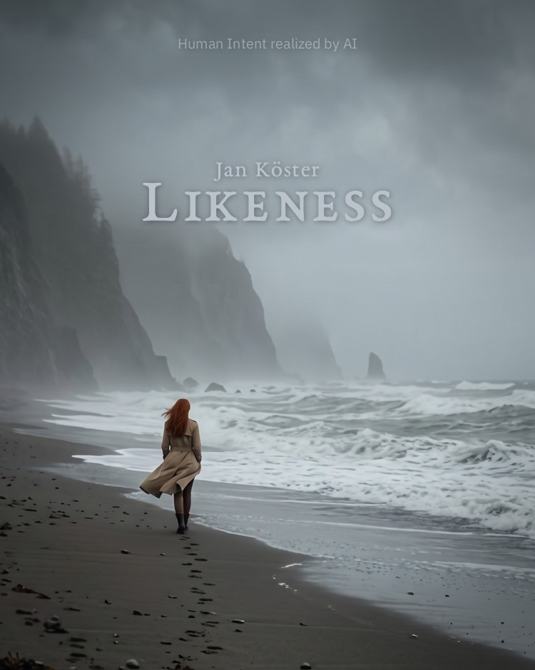

An AI-Realized Concept Album as a Field Experiment
Human Intent realized by AI
Likeness Notes
Synopsis
Likeness is an independent, thirteen-track Indie Folk concept album realized entirely through multimodal generative artificial intelligence (Google Gemini 3 and Lyria 3), accompanied by an exhaustive monograph.
Rather than treating artificial intelligence as a push-button novelty or a tool for automated commercial slop, this repository operates within the traditions of practice-as-research and critical making. It investigates what happens when we reject volume and velocity as metrics, replacing them with rigorous aesthetic intentionality, manual audio engineering, and ethical accountability.
Likeness offers an unredacted audit of an artistic encounter with an algorithmic black box: disclosing instructions, failed tracks, lyric iterations, mixing decisions, and legal considerations that shaped the final record.
Core Inquiries
Disclosing AI Usage
The EU Artificial Intelligence Act focuses strictly on deepfakes, leaving generic synthetic audio in a regulatory vacuum: When institutional frameworks fail to distinguish between automated slop and intentional curation, what does meaningful, proactive disclosure look like in practice?
The Threshold of Human Intent
Where does algorithmic probability end, and where does genuine artistic labor begin? Can an operator establish authentic authorship when working with stochastic models?
Subverting the Median
How can an artist steer generative audio engines away from their default statistical mean—the polished, generic clichés of commercial pop—toward idiosyncratic, emotionally resonant sonic territory?
Artificiality as Narrative Substance
Can the synthetic nature of generative media be reclaimed as an integral dimension of the artistic vision rather than concealed as a technical flaw?
A Blueprint for Independent Creators
How can solo artists establish sound recording rights (Verwertungsrechte des Tonträgerherstellers), protect their work against automated takedown bots, and implement ethical revenue-sharing models while navigating streaming monopolies?
Core Proposals
Documented Labor as Demarcation
Creators who employ generative models as authentic instruments must consciously distinguish themselves from low-effort slop through proactive, rigorous documentation—an investment of time and craft that anonymous spammers fundamentally cannot replicate.
A Native Provenance URL in the DDEX Standard
Digital streaming platforms and distributors should introduce a dedicated, standardized metadata field within ingestion schemas (such as DDEX ERN). Providing a direct outbound link to a verified dossier or repository creates an accountable link between an ephemeral synthetic track and its human provenance.
Shifting the Discourse from Tooling to Human Intent
Just as low-level software syntax is declining in relevance, cultural and critical discourse must move beyond the trivial question of whether AI was employed, focusing instead on how and to what purpose. Evaluating that how, however, requires substantive, open provenance rather than blunt, binary platform badges.
See Introduction for Details.
Audio & Album Access

Likeness is distributed to all major Digital Streaming Platforms (DSPs), released on September 25, 2026. It is conceived as a continuous narrative cycle; sequential listening is strongly recommended.
DistroKid HyperFollow Hub
(Direct gateway to Spotify, Apple Music, and other DSPs)
Likeness is also available on Youtube
Algorithmic Discoverability Note
If you prefer listening directly inside your native streaming app, searching manually for Jan Köster Likeness directly trains the platform's recommendation graph and organically signals authentic listener intent.
Technical & Conceptual Specifications
| Dimension | Implementation Details |
|---|---|
| DOI | 10.5281/zenodo.22953330 |
| Catalog Identifier | UPC: 882436992438 |
| Album Architecture | 13 Concept Tracks + 2 Curated Outtakes (39:49 min total runtime) |
| Discarded iterations | ~ 160 |
| Model Stack | Google Gemini 3.x (Consumer Mobile Application) orchestrating Google Lyria 3 |
| Post-Production DAW | Ardour on Linux; manual take splicing, dynamic leveling, audio optimization / restoration |
| Mastering Chain | Airwindows DSP plugins (e.g. Slew2 and Tape) + LSP Stereo Limiter |
| Loudness Standards | Normalized to -14 LUFS with True Peak held strictly between -1.0 and -2.0 dBTP |
| Watermarking & Audit | DeepMind SynthID embedded; SHA-256 artifact hashes anchored in a restricted Zenodo vault |
| Ethical Revenue Model | 25% of gross streaming royalties routed directly to the GroundUp Music Foundation via DistroKid's Artists for Change |
| Repository License | Apache 2.0 |
Suggested Entry Points
Given that the sheer volume of this documentation can be challenging to navigate, here is a brief orientation based on your primary focus:
Note
Regardless of your angle of interest, starting with the Introduction is strongly recommended to grasp the overarching scope and methodology.
Practical Implementation & Workflows
Instruction and Implementation outline both the essential production stages and technical methods. The granular genesis of individual pieces is documented in the liner notes of the respective track chapters.
Theoretical Foundations & Mental Framework
This domain is primarily explored in Vision. Instruction expands further on the practical and cognitive dynamics of human-machine interaction.
The Narrative World of Likeness
Those seeking the story and conceptual arc behind the lyrics will find it detailed in Narration. I also recommend consulting Cover Art for visual context. (Note that individual track chapters focus primarily on production history rather than comprehensive lyrical exegesis.)
Questions & Edge Cases
The Q&A anticipates and addresses broader questions—ranging from personal background and tooling choices to legal nuances and philosophical critiques—that extend beyond the sequential chapters.
Citation
@techreport{Koster_Likeness_Notes_2026,
author = {Köster, Jan},
doi = {10.5281/zenodo.22953330},
month = sep,
title = {{Likeness Notes: An AI-Realized Concept Album as a Field Experiment in Declared Intent, Cybernetic Workflows, and Methodology}},
url = {https://github.com/humans-in-latent-space/likeness-lp},
year = {2026}
}
Editorial & Linguistic Transparency Notice
In keeping with the project's foundational commitment to radical honesty:
The English text published across this documentation was refined, structured, and translated using advanced generative language models (Gemini 3.8 Flash), adopting the analytical essayistic register of publications such as The Atlantic and contemporary critical media theory.
In accordance with the Declared Intent, the unvarnished, raw German original text—written entirely by the human author by hand (predominantly on a mobile phone during night shifts)—remains permanently preserved in the Git commit history and the initial repository commits.
Anyone wishing to audit the divergence between initial human thought and algorithmic prose refinement can inspect the version tree in the original repository directly.